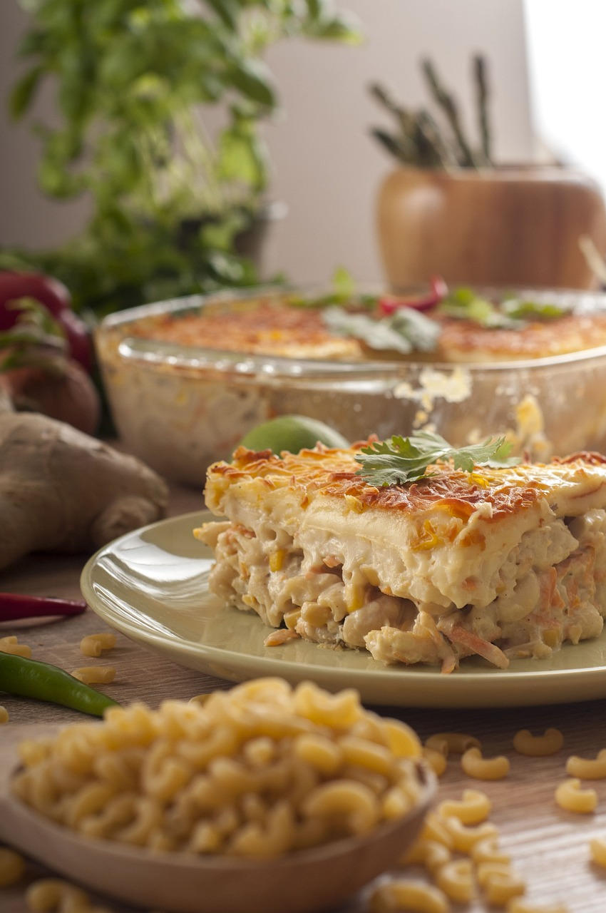
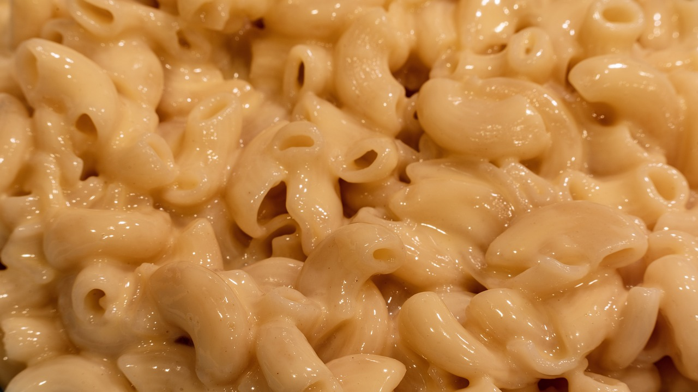

The mother of all Mac and Cheese
They say good artists borrow and great artists steal. To that I say, thanks Martha!

Ingredients
- 8 tbsp good quality butter plus more for dish
- 6 slices good quality sourdough bread, cubed
- 5 1/2 c whole milk
- 1/2 c all purpose flour
- 2 tsp kosher salt
- 1/4 tsp freshly grated nutmeg
- 1/4 tsp freshly ground pepper
- 1/4 tsp cayenne pepper
- 18 oz sharp white cheddar cheese, grated just before use
- 8 oz gruyere cheese, seperated and grated just before use
- 1 lbs elbow macaroni or preferred shape

Instructions
- Heat oven to 375 deg and butter a 3 qt casserole dish. Place bread in a large bowl. Melt 2 tbsp butter over medium heat then pour over bread and toss to coat before setting aside.
- Measure out spices into a ramekin, grate the cheeses and reserve 1 1/2 c of the grated cheddar and 1/2 c of the gruyere for topping.
- Bring pasta water to rolling boil (Shoot for 2% salt content or 2 tbsp for 1 gallon.)
- Cook pasta for 2-3 minutes less than al dente time then drain into colander and rinse with cold water immediately. Pasta will be purposely undercooked. Drain and set aside.
- In a medium saucepan set over medium heat, warm the milk - do not allow to boil. In a large thick bottom saucepan over medium heat melt the remaining 6 tbsp butter. When it bubbles, add flour and cook while whisking for 1 minute as it browns.
- Continue whisking as you slowly add the hot milk in small batches. No more then 1 c at a time and whisk thoroughly at each addition. Continue process until milk is fully incorporated and then cook until mixture is thick and bubbly.
- Remove from heat and stir in spices before adding the bulk of the two cheeses and mixing until melted. Stir in the cold macaroni and then spread mixture into prepared baking dish.
- sprinkle reserved cheese on top of pasta and then bread cubes on top of that. Bake in center of oven until browned on top. It browning takes longer than 30 min shift to broil to finish browning sso pasta does not overcook. Transfer dish to wire rack to cool.
Note: Do not use cheap cheese or bags of shredded cheese as it will dramatically change the final product. If you have some leftover cheese sauce it can be added to two slices of buttered sourdough bread to make an amazing grilled cheese.
